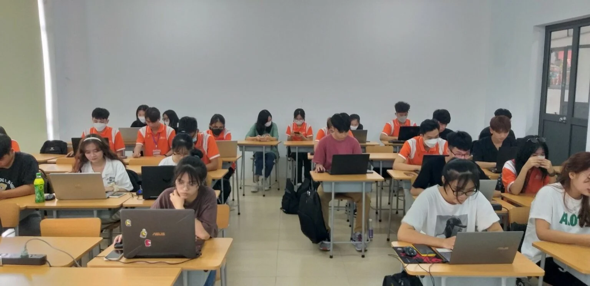

Sinh viên FPoly Hà Nội so tài “múa” phím đầy gay cấn ngay trong ngày đầu vòng loại “Typing Bees”
Sáng ngày 12/9 vừa qua, vòng sơ loại cuộc thi “Anh hùng bàn phím – Typing Bees” đã chính thức được diễn ra, thu hút nhiều bạn sinh viên tại Cao đẳng FPT Polytechnic Hà Nội, Melbourne và BTEC đăng ký tham gia.
Với mong muốn giúp sinh viên hứng thú trong việc luyện thành thạo kỹ năng gõ máy tính ở tốc độ nhanh, tính chính xác cao, từ đó góp phần nâng cao hiệu quả học tập và công việc, bộ môn Ứng dụng phần mềm và bộ môn tiếng Anh FPT Polytechnic Hà Nội đã lên ý tưởng tổ chức cuộc thi “Anh hùng bàn phím – Typing Bees”. Cuộc thi mở rộng địa bàn tham gia dành cho các bạn sinh viên FPT Polytechnic Hà Nội, Melbourne và BTEC.

Ngày 12/9 vừa qua, dù chỉ mới bắt đầu công bố vòng sơ loại, thể lệ, “Typing Bees” đã thu hút được nhiều bạn sinh viên quan tâm theo dõi, đăng ký. Cụ thể, tại vòng sơ loại (12/9 – 24/9), các bạn sinh viên sẽ được tham gia ngay trong chính buổi học buổi học đầu tiên môn Tiếng Anh (15p đầu giờ). Đặc biệt, các bạn sinh viên chỉ được tham gia 1 lần duy nhất, sinh viên nào có số lượng WPM (words per minute) nhiều nhất và có độ chính xác cao nhất sẽ được đi tiếp vào Vòng chung kết.
Không khí tranh tài tại “Typing Bees” trở nên vô cùng gay cấn
Thời gian diễn ra:
Vòng sơ loại: 12/9 – 24/9/2022
Vòng chung kết: 10/10/2022
Thể lệ dự thi:
Vòng sơ loại
Thí sinh dự thi theo hình thức cá nhân.
Mỗi phòng thi có tối đa 35 sinh viên/phòng.
Sinh viên sẽ đăng nhập vào phần mềm thi do ban tổ chức cung cấp để thực hiện bài thi. Phần thi của sinh viên sẽ bao gồm 01 đoạn văn bản (text) có độ dài và độ khó phù hợp với vòng thi.
Mỗi bài thi sẽ diễn ra trong 5 phút. Điểm số của thí sinh sẽ tính dựa vào độ chính xác và tốc độ đánh máy được quy đổi từ hệ thống.
Sau vòng loại sẽ lấy 1500 thí sinh có kết quả thi tốt nhất sẽ được tham dự vòng chung kết.
Các thí sinh tự do học tại Cao đẳng FPT Polytechnic Hà Nội đã hoàn thành hết môn tiếng Anh hoặc không tham gia thi được trong buổi học tiếng anh đầu tiên sẽ đăng ký TẠI ĐÂY để thi sơ loại.
Vòng chung kết
1500 bạn sinh viên xuất sắc vượt qua Vòng Sơ loại sẽ tiếp tục tranh đấu để tìm ra ngôi vị quán quân của cuộc thi.
Trải qua ngày đầu tiên với 1805 SV tham gia và nhiều điểm số đáng ngưỡng mộ, “Typing Bees” hứa hẹn sẽ là cuộc thi vô cùng gay cấn và lôi cuốn. Thời gian đăng ký vòng sơ loại vẫn còn rất dài, vậy nên hãy cùng đón chờ các phần tranh tài đầy bất ngờ đến từ vị trí các bạn sinh viên Cao đẳng FPT Polytechnic Hà Nội, Melbourne và BTEC trong các ngày tiếp theo nhé!